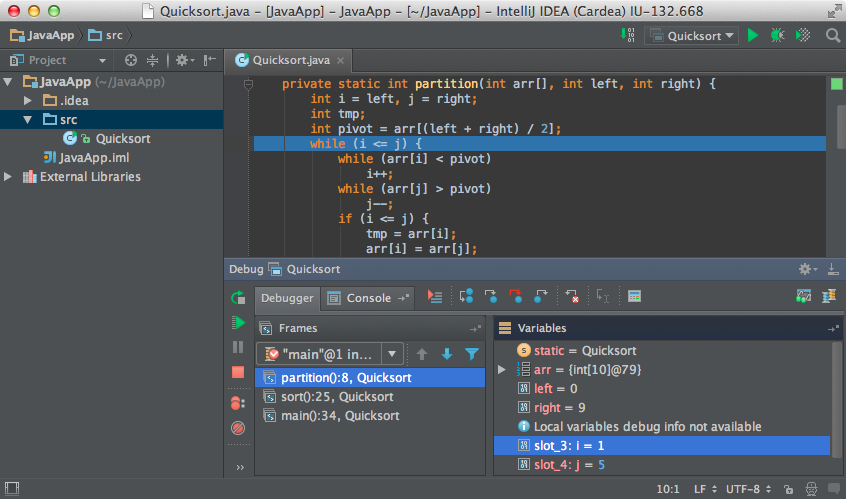
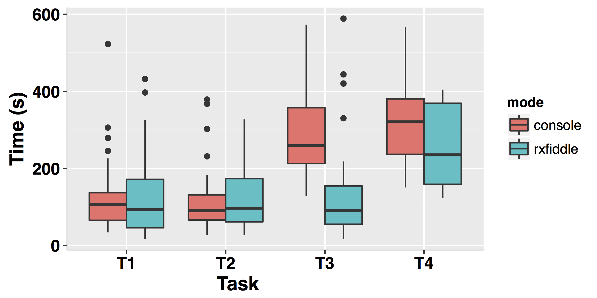

Debugging Data-Flows
Herman Banken
Thanks you all for being here.
Reactive Programming
For some of you the title "Debugging Data-Flows in Reactive Programs" might include some unknown words.
Third, we will see the way of debugging for Reactive Programming that I designed, during this thesis. Called RxFiddle.
Reactive Programming
So what is reactive programming?
Let's see where we're coming from: imperative programming.
Programming once was like baking pancakes.
First we gather the ingredients like milk, flower and eggs. In programming this would be data.
Then we would mix the ingredients, then bake the pancake. In programming this is where we do something with the data.
What we do is explicitly defined in the recipe: code.
Finally we have the result, pancakes; or the program output.
But this has changed.
15 billion devices connected internet.
Accustomed push notifications.
Expect live updates.
We must continuously bake pancakes: process data continuously.
Smaller steps.
In between every worker has his own job, doing the same thing to every car.
Reactive Programming
Reactive Programming is like specifying the design of these car factories.
We have many streams of input data from sources outside of our control.
We then combine these streams. Transform the streams. Do stuff with the data inside.
And then we output the data again.
CLICK FOR MARIO.
Reactive Programming library
API for streams
142 different operators
As a programmer you can use Reactive Programming in different ways.
You can use a Reactive language, but you can also use a library.
Rx is such a library. You can use Rx with most programming languages, and combine Reactive and Imperative programming.
Rx is an API for reactively handling streams of data.
Imagine the different ways that you can modify a stream of data.
Rx has 142 operators, all with different functions.
To modify the values in the stream, their timing to delay values.
To combine streams. To interleave streams.
And many more.
inputStream
.map(x => 10 * x)
.filter(_ > 100)
.scan(_ + _)
.subscribe(render)
marioStream
.filter(_.level > 4)
.throttle(100ms)
.merge(shellStream)
.scan(battle)
.subscribe(render)
This is an example of some Rx code.
1 inputStream.
3 operators. 1 subscribe.
De∙bug
Finding mistakes
Understanding code
Now that we have some idea of what Reactive Programming is, lets talk about debugging.
Debugging literally means removing bugs, like insects, from old computer punch cards.
In modern times bugs are just mistakes made by the programmer.
Debugger tools
Features:
Pause execution
Stepping
Breakpoints
Variables & watches

We use special tools called debuggers to find these mistakes.
When writing new software we often use the same debug tools to test if the program runs correctly.
Interviews
Stepping "painful"
Breakpoints: no overview
Prefer printf-debugging
printf-debugging
inputStream
.do(x => printf("%d", x))
.map(x => 10 * x)
.do(x => printf("map: %d", x))
.filter(_ > 100)
.scan(_ + _)
.do(x => printf("scan %d", x))
.subscribe(render)
// Output
5
8
12
map: 120
15
map: 150
scan: 270
printf-debugging
Requires code changes
No overview and context
life-cycle events
Can we do better?
Overview of structure of streams
Understanding dependencies
Finding issues & bugs
Understanding code
Yes!
Overview of streams
Detailed view of single flow
YES! As part of my thesis I designed a new debugger for Rx.
Remember...
the green pipes?
the Marble Diagram?
... generate these pipes as a visualization?
Instrumentation
Visualizer
Rx.Observable
.of(source1, source2)
.mergeAll()
.skip(2)
.subscribe()
We trace every Rx method call. How?
let original = Rx.Observable.of
Rx.Observable.of = function(...arguments) {
debugger.start(original, this, arguments)
let result = original(...arguments)
debugger.end(original, this, arguments, result)
return result
}
1. store function
Data Flow Graph
4 different Data Flow Graphs
Experiment
111 participants
survey, 1 warm-up task, 4 debug tasks
Measure: time until correct answer
Experiment
Time per task

"By using RxFiddleimproved control over our Observables, Subscriptions and
Future work
Data Flow Graph scalability
show provenance and lineage tracking
alternative stream visualizations (plots, FFT)
Smart Breakpoints
Experiment
Outcome per task